Antes de probar nada hay que mirar los datos. El Bloque 3 resume la respuesta por tratamiento, por bloque o por combinación de factores, interpreta en lenguaje llano el coeficiente de variación, la asimetría y los valores atípicos, y dibuja los gráficos exploratorios con los que se descubren los errores de captura y las sorpresas antes de que lleguen al ANOVA.
Un ANOVA resume todo el experimento en una prueba F. Explorar primero protege de tres errores clásicos: analizar un error de captura como si fuera un efecto de tratamiento, comparar medias cuando las varianzas son muy distintas, y reportar una media para una variable cuya distribución no tiene un centro con sentido, como los conteos muy asimétricos o las calificaciones acotadas.
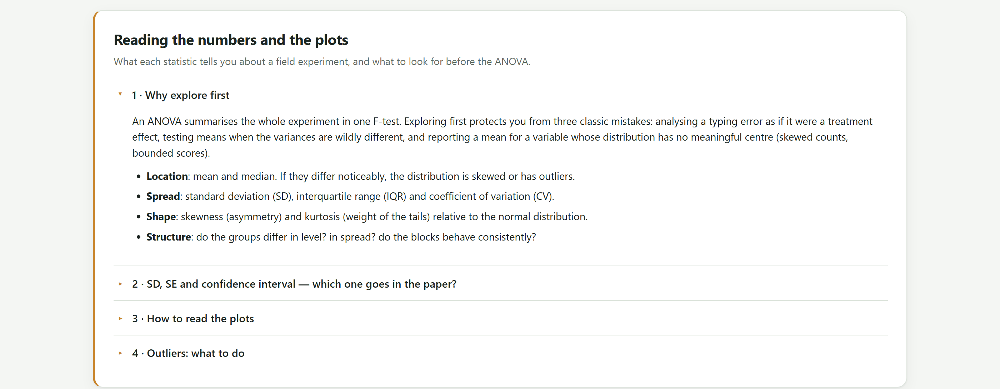
¿Dónde está? Media y mediana. Si difieren de forma notoria, la distribución es asimétrica o tiene valores atípicos. ¿Cuánto se dispersa? Desviación estándar, rango intercuartílico y coeficiente de variación. ¿Qué forma tiene? Asimetría (hacia qué lado se alarga) y curtosis (cuánto pesan las colas) respecto a la distribución normal. ¿Cómo se estructura? Si los grupos difieren en nivel, si difieren en dispersión y si los bloques se comportan de manera consistente. Las cuatro preguntas se contestan con la tabla y los gráficos de este bloque.
| Estadístico | Fórmula | Describe | Úsalo cuando… |
|---|---|---|---|
| Desviación estándar (SD) | √[Σ(y − ȳ)² / (n − 1)] | La variabilidad de las parcelas individuales. | Quieres mostrar qué tan dispersas están las observaciones. |
| Error estándar (SE) | SD / √n | La precisión de la media. | Comparas medias; es la barra habitual en las figuras de medias por tratamiento. |
| Intervalo de confianza al 95 % | ȳ ± t0.975, n−1 · SE | El rango de valores plausibles para la media verdadera. | Quieres que el lector juzgue las diferencias a ojo. |
| CV (%) | SD / ȳ × 100 | La variabilidad relativa, sin unidades. | Comparas la precisión entre ensayos o entre variables. |
Una barra de error puede ser una desviación estándar, un error estándar o un intervalo de confianza, y las tres tienen tamaños muy distintos para los mismos datos. Con n = 4, el intervalo al 95 % mide más de tres veces el error estándar. Escribe siempre en el pie «media ± EE» o lo que corresponda, y no concluyas nada de que dos barras de error estándar se traslapen: eso no equivale a «no significativo». La prueba del Bloque 5 decide.
La tarjeta Choose what to describe tiene tres controles: la respuesta, la variable de agrupación y el número de decimales. Todo lo demás del bloque, tarjetas, tabla, interpretación y figuras, se recalcula al cambiar cualquiera de ellos.
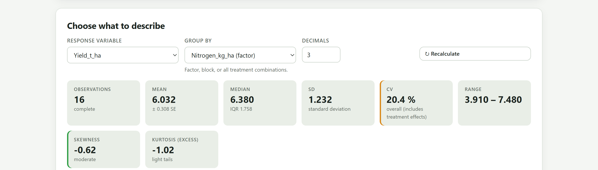
1 2 3 4 5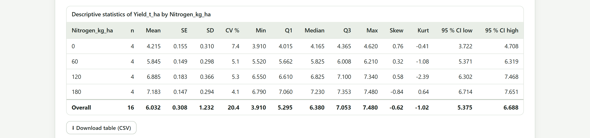
| Columna | Qué es |
|---|---|
| n | Observaciones con valor en el grupo. |
| Mean · SE · SD | Media, error estándar y desviación estándar del grupo. |
| CV % | Coeficiente de variación del grupo: SD / media × 100. |
| Min · Q1 · Median · Q3 · Max | Los cinco números del diagrama de caja: mínimo, primer cuartil, mediana, tercer cuartil y máximo. |
| Skew · Kurt | Asimetría y curtosis en exceso (0 para la normal). Con tres o cuatro observaciones son muy inestables; la curtosis se omite con n = 3. |
| 95 % CI low · 95 % CI high | Límites del intervalo de confianza al 95 % de la media del grupo, con la t de Student de n − 1 grados de libertad. |
| Overall | La última fila: todos los datos juntos, sin agrupar. |
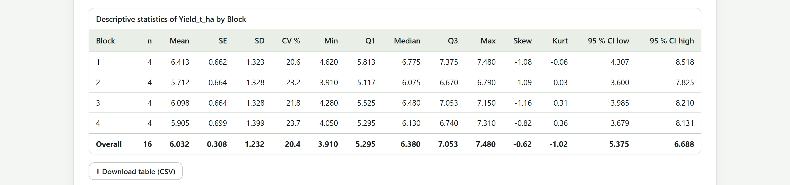
Cuando la tabla tiene dos o más factores, el menú Group by ofrece además All treatment combinations, que describe cada celda del factorial, y el bloque añade una tabla de medias de dos vías con las medias marginales de cada factor.
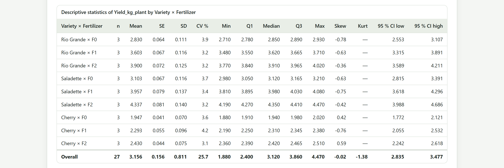
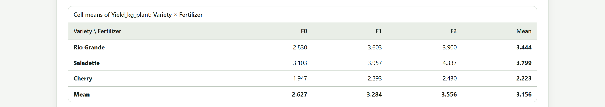
El CV es el estadístico que más se pregunta en un seminario de agronomía, y el que más se malinterpreta. Es la desviación estándar expresada como porcentaje de la media, así que no depende de las unidades y permite comparar la precisión de ensayos de cultivos, variables y años distintos.
| CV | Lectura | Típico de… |
|---|---|---|
| < 10 % | Excelente precisión | Altura de planta, fenología, ensayos en invernadero y laboratorio. |
| 10 a 20 % | Normal en campo | Rendimiento de grano en parcelas de campo bien conducidas. |
| 20 a 30 % | Alta; la precisión es limitada | Rendimiento en condiciones difíciles, conteos, variables de calidad. |
| > 30 % | Muy alta; revisar | Conteos de insectos, severidad de enfermedades, o un ensayo con problemas: terreno heterogéneo, parcelas perdidas, errores de captura, variable que pide transformación. |
La app aplica estos cortes a las tarjetas y a la interpretación: verde hasta 20 %, ámbar hasta 30 %, rojo por encima. Son referencias para rendimiento; cada variable tiene las suyas.
Bajo la tabla, What the numbers say convierte los estadísticos en frases. Cada frase tiene un nivel (verde, ámbar, rojo o informativo) y dice qué bloque resolverá lo que señala.
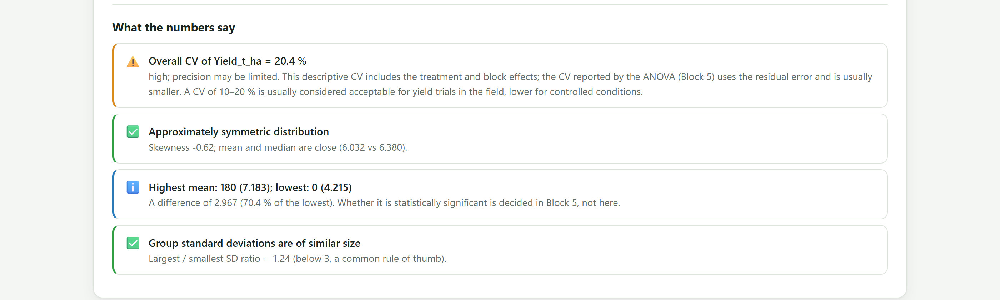
| Frase | Cuándo aparece y qué hacer |
|---|---|
| Overall CV of Y = x % | Siempre. Verde por debajo de 20 %, ámbar hasta 30 %, rojo por encima. Recuerda que es el CV descriptivo, no el del ANOVA. |
| Approximately symmetric distribution · Distribution is right/left-skewed | Según la asimetría sea menor o mayor que 1. Con asimetría positiva y valores positivos sugiere probar logaritmo o raíz cuadrada; el Bloque 4 lo decidirá sobre los residuales, que es lo que importa. |
| N potential outliers by Tukey's rule | Valores a más de 1.5 rangos intercuartílicos de los cuartiles, listados. Verifícalos en la libreta antes de decidir nada. |
| Highest mean: A; lowest: B | Con dos o más grupos: la diferencia entre el mejor y el peor, en unidades y en porcentaje del menor. Si es significativa se decide en el Bloque 5, no aquí. |
| Group standard deviations are of similar size · …differ x-fold | Cociente entre la mayor y la menor desviación estándar de los grupos. Por encima de 3 hay varianzas heterogéneas: el Bloque 4 lo probará con Levene o Bartlett y ofrecerá transformación, Welch o no paramétricos. |
| The spread grows with the mean | Con cuatro o más grupos, cuando la correlación entre medias y desviaciones estándar pasa de 0.7. Típico de conteos y de variables proporcionales; logaritmo o raíz cuadrada suelen estabilizar la varianza. |
| N groups with fewer than 3 observations | SD, CV e intervalos no son fiables en grupos tan pequeños. |
La tarjeta Exploratory figures dibuja hasta nueve figuras según lo que tenga la tabla. Todas son editables (Edit figure) y se descargan a resolución de publicación; los ajustes de estilo que cambies se recuerdan para las figuras siguientes. El capítulo del Bloque 6 describe el editor a fondo; aquí interesa qué muestra cada figura y qué buscar en ella.
| Figura | Aparece cuando… | Qué buscar |
|---|---|---|
| Histograma con densidad | Siempre | La forma de toda la muestra. Dos jorobas suelen ser dos tratamientos o dos bloques, no un problema. |
| Diagrama de caja | Hay grupos | Cajas de altura muy distinta señalan varianzas desiguales; los círculos, valores atípicos. |
| Violín | Hay grupos | Bimodalidad que la caja esconde. Necesita cinco o seis observaciones por grupo para decir algo. |
| Medias con barras de error | Hay grupos | La figura clásica de tratamientos; el pie debe decir qué son las barras. |
| Puntos individuales | Hay grupos | La imagen honesta con tres o cuatro repeticiones, donde cajas y violines engañan. |
| Perfiles por bloque | Se agrupa por un factor y hay bloque | Una línea por bloque a lo largo de los tratamientos. Líneas paralelas: el orden de los tratamientos es el mismo en todos los bloques (aditividad). Líneas que se cruzan: interacción bloque × tratamiento o una parcela rara. |
| Gráfico de interacción | Hay dos factores | Líneas paralelas, sin interacción; convergentes o cruzadas, interacción, y los efectos principales se interpretan con cuidado. |
| Dispersión contra la covariable | Hay covariable | Si la respuesta depende linealmente de la covariable, el análisis de covarianza del Bloque 5 ganará precisión. |
| Mapa de calor de correlaciones | Hay dos o más respuestas | Qué respuestas se mueven juntas; con correlaciones altas, un solo resultado cuenta la misma historia dos veces. |
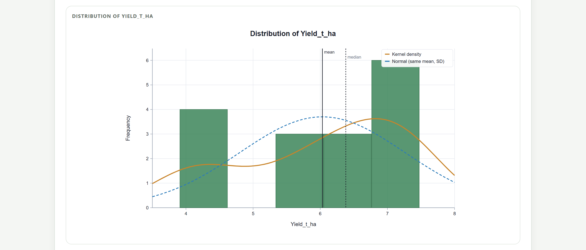
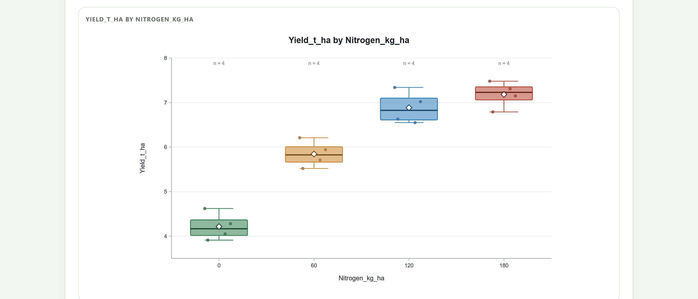
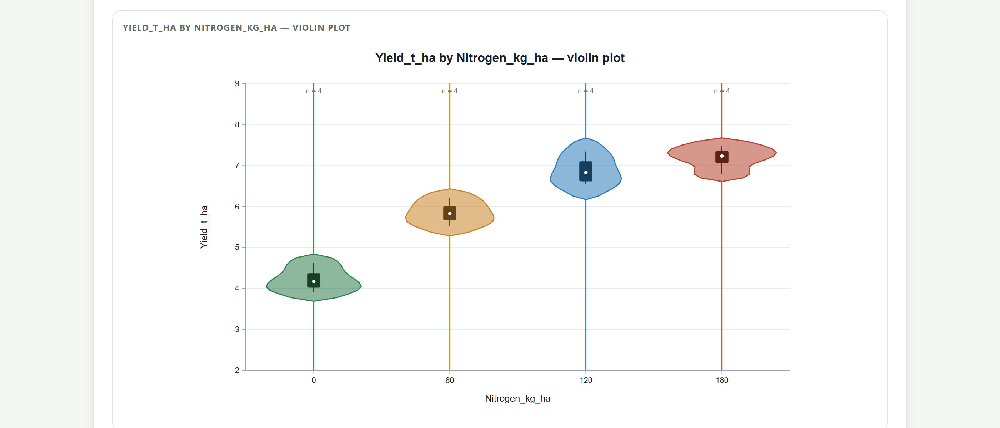
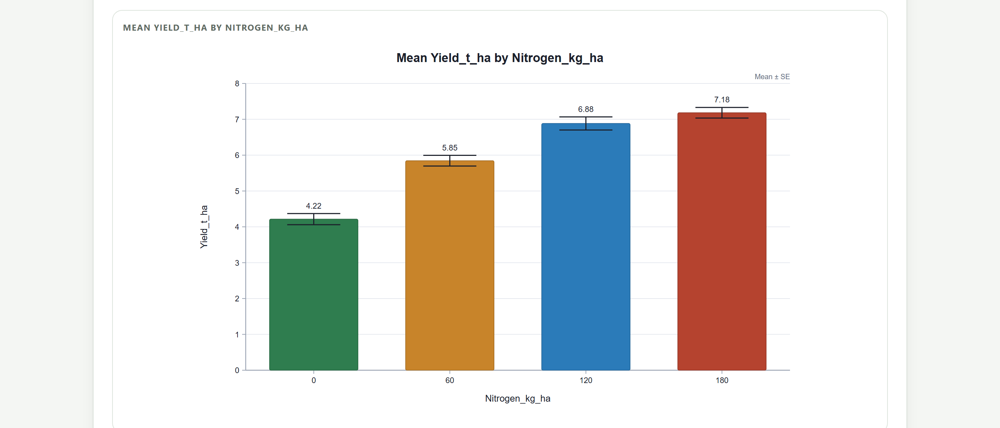
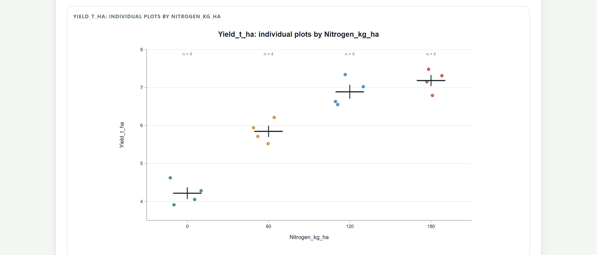
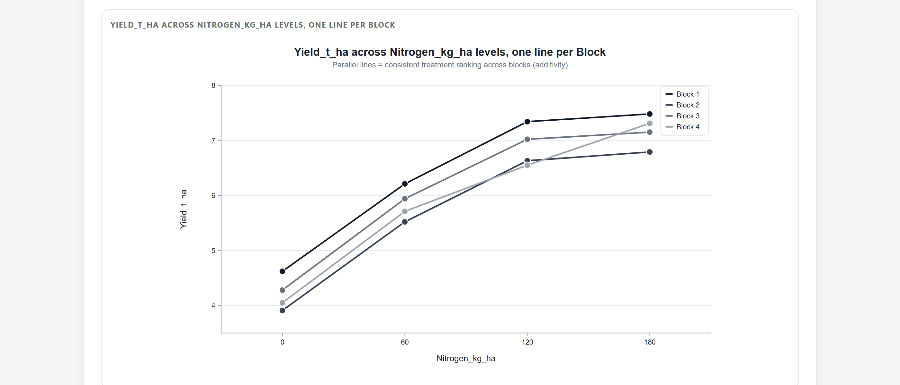
| Si las líneas… | entonces… |
|---|---|
| son casi paralelas y están separadas verticalmente | El bloqueo capturó una diferencia real entre bloques y el modelo aditivo es razonable. Lo esperado en un buen ensayo. |
| son casi paralelas y se traslapan | Los bloques no difieren; bloquear no costó más que unos grados de libertad. |
| se cruzan en un solo punto | Una parcela sospechosa. Búscala en la libreta antes de seguir. |
| se cruzan por todas partes | Interacción bloque × tratamiento: el orden de los tratamientos cambia de bloque a bloque. Revisa la aditividad en el Bloque 4; quizá haga falta una transformación. |
La misma lectura vale para el gráfico de interacción entre dos factores, con la diferencia de que ahí la interacción puede ser el resultado que buscas.
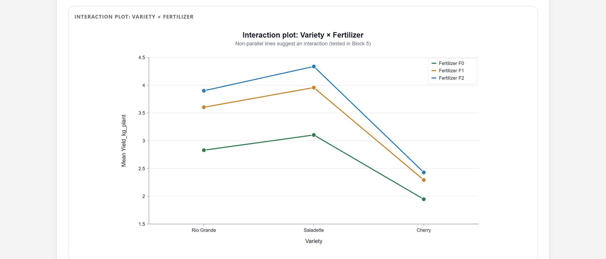
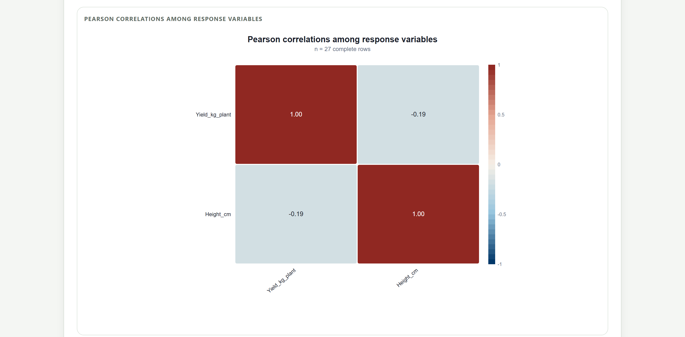
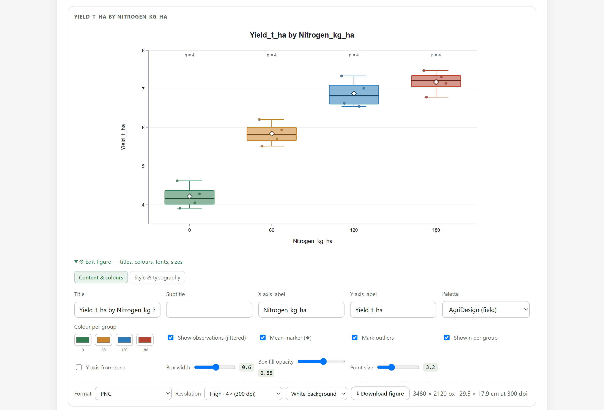
1 2 3 4 5 6Las figuras de medias con barras arrancan del cero porque una barra representa una cantidad; las cajas, violines y puntos no, porque lo que importa en ellas es la comparación entre grupos y un eje desde cero aplastaría las diferencias. La casilla Y axis from zero cambia esa decisión en cualquier figura. Para rendimientos de 4 a 7 t/ha, una figura de medias sin cero exagera visualmente la diferencia entre dosis; con cero, la muestra en proporción.
Yield_t_ha como respuesta y Nitrogen_kg_ha como agrupación.Yield_kg_plant; la segunda, Height_cm, se elige en Response variable.El Bloque 3 no prueba hipótesis: describe. Su trabajo es que llegues al ANOVA sabiendo cómo son los datos: si hay parcelas sospechosas, si las varianzas son parecidas, si los bloques se comportan igual y si los factores parecen interactuar. Un CV descriptivo alto no es una mala noticia cuando lo explican los tratamientos; una caja mucho más alta que las demás o una línea que cruza a las otras sí lo son, y se resuelven en la libreta o en el Bloque 4, nunca borrando datos.
Con los datos explorados, el siguiente paso es comprobar formalmente los supuestos del análisis de varianza. El capítulo del Bloque 4 explica por qué se revisan en los residuales, qué pruebas usa la app, cómo elegir una transformación con el perfil de Box–Cox y cuándo pasar a la ruta no paramétrica.